Hub managers
Tools
The tool pipeline is how a tool gets from a developer's registration form to a launchable resource page on the hub. This page walks the pipeline from the administrator's side.
The pipeline
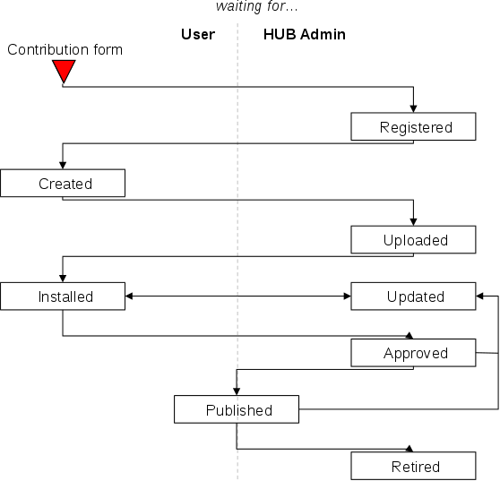
A tool has nine states. The number is the state column on #__tool:
| # | State | Set by | Meaning |
|---|---|---|---|
| 1 | Registered | Developer | The contribution form is submitted |
| 2 | Created | Administrator | The project area and repository exist |
| 3 | Uploaded | Developer | Code is committed and ready to install |
| 4 | Installed | Administrator | Code is built and installed on the hub |
| 5 | Updated | Developer | New code committed; reinstall needed |
| 6 | Approved | Developer | Tool page and license done; ready to publish |
| 7 | Published | Administrator | Live on the hub |
| 8 | Retired | Administrator | Page remains, tool can no longer be run |
| 9 | Abandoned | Developer | The contribution was cancelled |
Each state carries tasks for one side or the other. This page calls the developer's tasks user tasks and the administrator's admin tasks.
Preparation
Administrator controls on the pipeline are not granted by the ordinary
component ACL. They are granted by membership of the hub group named in
com_tools' Admin Group option, which defaults to apps:
// if no admin group is defined, allow superadmin to act as admin
// otherwise superadmins can only act if they are also a member of the component admin group
if ($admingroup = trim($this->config->get('admingroup', '')))
{
// Check if they're a member of admin group
$ugs = \Hubzero\User\Helper::getGroups(User::get('id'));
if ($ugs && count($ugs) > 0)
{
$admingroup = strtolower($admingroup);
foreach ($ugs as $ug)
{
if (strtolower($ug->cn) == $admingroup)
{
$this->config->set('access-manage-' . $assetType, true);
$this->config->set('access-admin-' . $assetType, true);
$this->config->set('access-create-' . $assetType, true);
$this->config->set('access-delete-' . $assetType, true);
$this->config->set('access-edit-' . $assetType, true);
}
}
}
}
While that option has a value, membership of the group is the only way to get those controls; a Super User outside the group sees none of them. Clear the option and the component falls back to the normal permission checks.
To add someone to the group:
- In
/administrator, go to Components → Groups. - Search for
apps(or whatever the Admin Group option names). - Open the group's membership.
- Add the administrator's username as a Member.
Registering a tool
Registration is a user task. The developer starts the contribution flow on the
hub and chooses the tool contribution type, which lands on the registration
form (/tools/create). The pipeline listing at /tools/pipeline also has a
New Tool button that goes straight there.
The form asks for:
About your tool
| Field | Notes |
|---|---|
| Tool Alias | 3–15 alphanumeric characters, no spaces. Becomes the tool's directory name. Cannot be changed once registered |
| Title | The full display name |
| Version | Optional, e.g. 1.0. No spaces |
| Description | One line |
| Development team | Usernames allowed to modify the code |
| Application Screen Size | Width and height in pixels; defaults from the Default VNC Size option |
| Required hosts | Comma-separated session host types; defaults from Default Required Host Types |
Access
| Field | Options |
|---|---|
| Tool Access | Anyone can run tool; restricted to US users (export control); restricted to users on Purdue campus; or restricted to named groups |
| Source Code Access | Open to public, or closed (restricted to development team) |
| Project Area Access | Open to public, or closed |
Repository Host — this is new since the guide was first written, and it decides which of the upload instructions below apply:
| Option | Label on screen |
|---|---|
gitExternal |
Host Git repository on GitHub, GitLab, etc. |
gitLocal |
Host Git repository here |
svnLocal |
Host subversion repository here |
gitExternal is the default when the component's External GitHub Repo
option is on, and it adds a field for the external repository URL. The
Subversion instructions later on this page apply only to svnLocal.
Publishing Option
| Option | Label on screen |
|---|---|
standard |
Rappture or Linux-GUI based tool |
jupyter |
Web application (Jupyter, Rstudio, ...) |
simtool |
Sim2L |
The Jupyter and Sim2L choices appear only when the matching component options
are on; Sim2L additionally requires the platform's invoke.simtool template
to be present on the host.
Everything except the tool alias can be changed later. Register Tool submits the form and puts the tool in the Registered state.
For the full option list see the
generated com_tools parameter reference.
Registered to Created
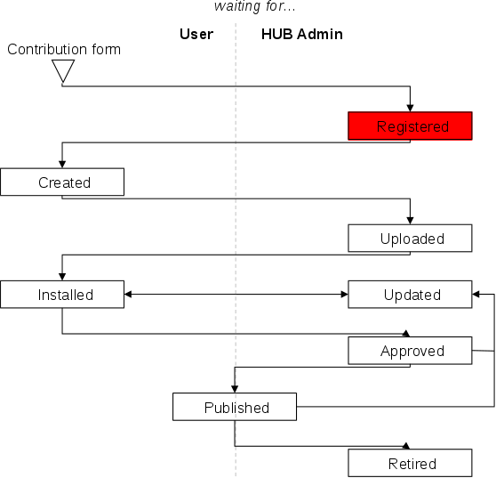
This is an admin task. Go to /tools/pipeline. The page lists every tool
contribution on the hub, with Filter by (All tools, My submissions,
Published tools, Tools under development) and Sort by (Status, Registration
date, Tool alias). Tools needing attention are highlighted.
If a registered tool does not appear, the account is probably not in the admin group — see Preparation.
Click the tool alias to open its status page. The status page has three parts: the tool's registration details, Developer Tools on the left (Wiki, Source code, Timeline, Message, and Cancel while the tool is still under development), and What's next? on the right, which lists the remaining steps and marks off the ones already done.
Below the developer tools, administrators get an Administrator Controls panel with four buttons — Add Repo, Install, Publish, Retire — and a form carrying Flip Status, Priority, an optional message to the development team, and an Apply change button.
Press Add Repo. That runs the host's addrepo script, which creates the
source code repository and project wiki and sets up access for the development
team. The results come back in the page: a green box means it worked, a red
box lists the errors. Running it again is safe — existing pieces are not
overwritten.
Then set Flip Status to Created and press Apply change.
Created to Uploaded
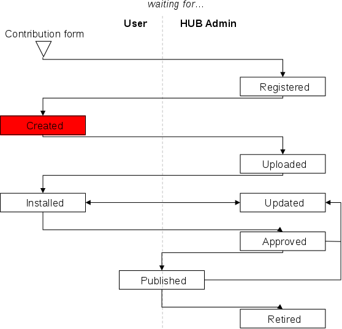
Uploading the source is a user task. In the Created state the What's next? panel links to the project's Getting Started wiki page and, under We are waiting for You, offers the flip link "My code is committed, working, and ready to be installed".
The rest of this section is the platform's tool-packaging convention, quoted from the original guide. It describes what the developer does inside a workspace on the execution host, and none of it is verifiable from the CMS repository.
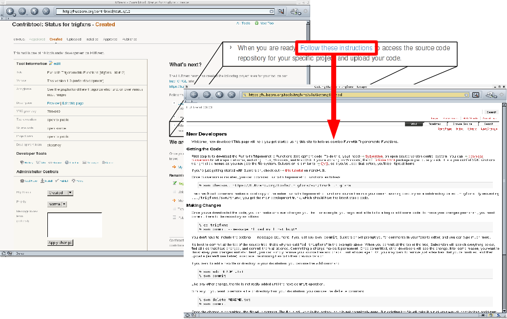
There are four requirements for installing a tool in the hub environment:
- Source code
- Graphical user interface
- Makefile
- Invoke script
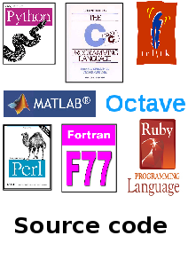
Source code includes all files related to running the application, with
tool.xml and possibly a wrapper script as the exceptions. No binaries built
from the source should be stored in the repository. Binary data files such as
images are fine; committed build products are not, because they cause
compatibility problems later even when they claim to be platform independent.
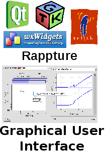
All tools need a graphical user interface. Qt, GTK, wxWidgets, and Tcl/Tk all work. If the tool has none, Rappture will build one that guides users through running the tool and viewing results, and it has hooks into the hub infrastructure.
All tools need a Makefile, which holds the instructions for compiling and installing binaries. Tools with nothing to compile still need one.
All tools need an invoke script, which says how to launch the tool in the hub environment. It is usually a one-line call to the hub's own invoke script.
There are eight steps to getting source code into the repository:
- Check out a copy of the tool's source code repository.
- Add source code to the
srcdirectory. - Add a Makefile to the
srcdirectory. - Add
tool.xmlto therappturedirectory. - Check the
middleware/invokescript. - Test the code in the workspace.
- Clean the directories before committing.
- Commit the changes.
All of them can be done from within a workspace.
1. Check out the repository
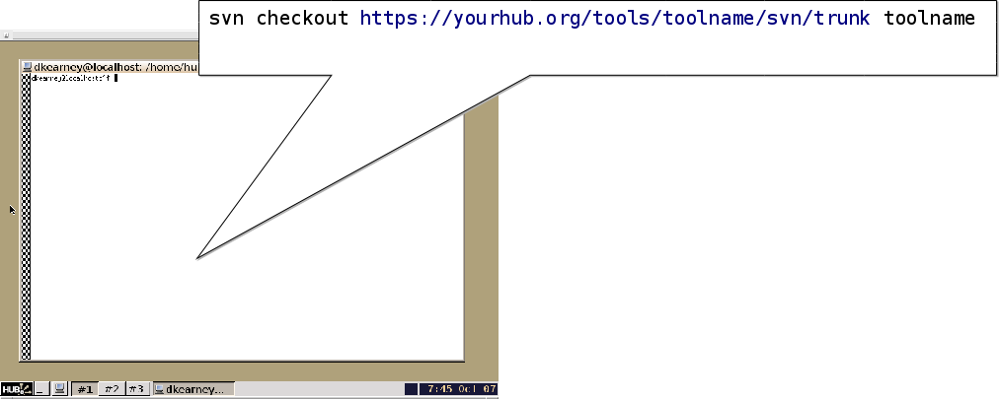
svn checkout https://yourhub.org/tools/toolname/svn/trunk toolname
Replace yourhub.org with the hub's hostname and toolname with the tool
alias. Run inside a workspace, this puts a local copy of the repository in a
directory named for the tool.
2. Add source code
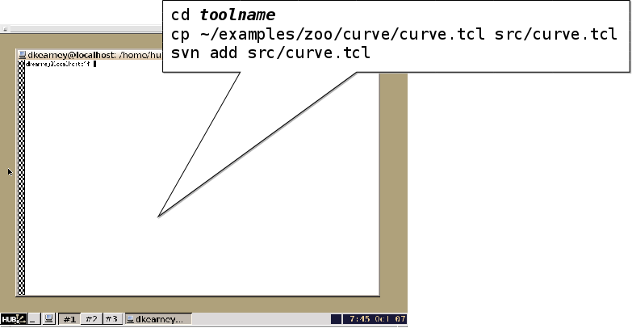
cd toolname
cp /apps/rappture/examples/zoo/curve/curve.tcl src/curve.tcl
svn add src/curve.tcl
Every file has to be added, one by one or by directory.
3. Add a Makefile
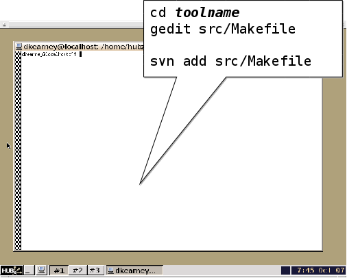
gedit src/Makefile
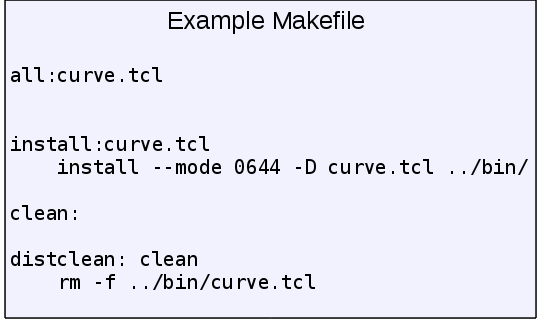
all: curve.tcl
install: curve.tcl
install --mode 0644 -D curve.tcl ../bin/
clean:
distclean: clean
rm -f ../bin/curve.tcl
Here the source is a single Tcl script, so all is empty. Code that needs
compiling would put its compile line — gcc -o curve curve.c — under all.
install puts executables and scripts into ../bin with the right
permissions. clean removes build leftovers. distclean calls clean and
then removes whatever install produced, so that running it returns the
working copy to the state it was checked out in.
Save the file and svn add src/Makefile.
4. Add tool.xml
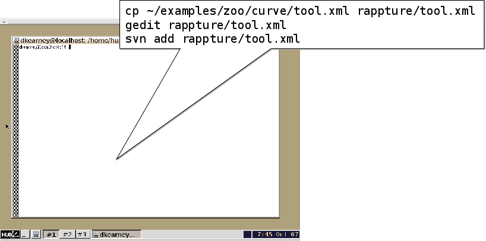
cp /apps/rappture/examples/zoo/curve/tool.xml rappture/tool.xml
svn add rappture/tool.xml
5. Check the invoke script
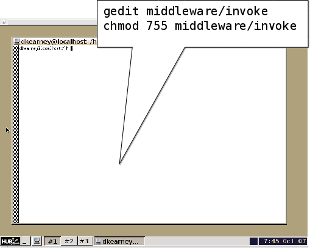
The middleware directory must contain a file named invoke. If it is
missing, create it and add it to the repository the same way as the Makefile.
The invoke script sets up the environment and launches the tool when a user
presses Launch tool. The default is:
#!/bin/sh
/apps/rappture/invoke_app "$@" -t toolname
/apps/rappture/invoke_app is the hub's own invoke script. On older hubs it
only launches Rappture applications; on newer ones it is a link to
/apps/invoke/current/invoke_app, which launches Rappture applications and
most non-Rappture ones. Its common flags:
-r Rappture version (current, dev)
-t tool name
-T tool root directory
-e environment variable to set
-p add a path to the PATH environment variable
-C command to launch the tool
-A additional arguments to add to the command for launching the tool
-c commands to start in the background before launching the tool, like filexfer
The script itself documents the rest. Finally, make it executable:
chmod 755 middleware/invoke
6. Test in a workspace
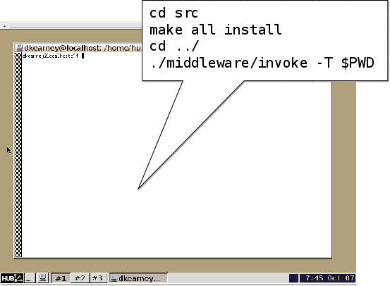
cd src
make all install
cd ../
./middleware/invoke -T $PWD
-T names the tool root directory, and $PWD is it. When the GUI appears,
run a simulation and check the result.
This step matters: it is the same sequence the administrator runs when installing the tool on the hub. Anything that fails here fails there too, so it should be fixed before the status moves to Uploaded.
7. Clean up
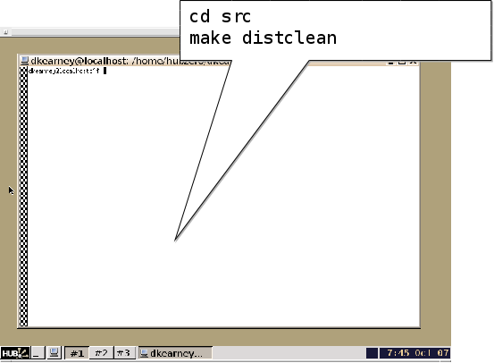
cd src
make distclean
cd ../
This removes what the install produced, so no binaries or temporary files end up in the repository.
8. Commit
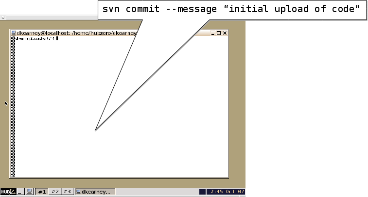
svn commit --message "initial upload of code"
Commit from the top of the working copy, since a commit only covers the current directory and below. Enter the hub credentials if prompted.
Flip the status
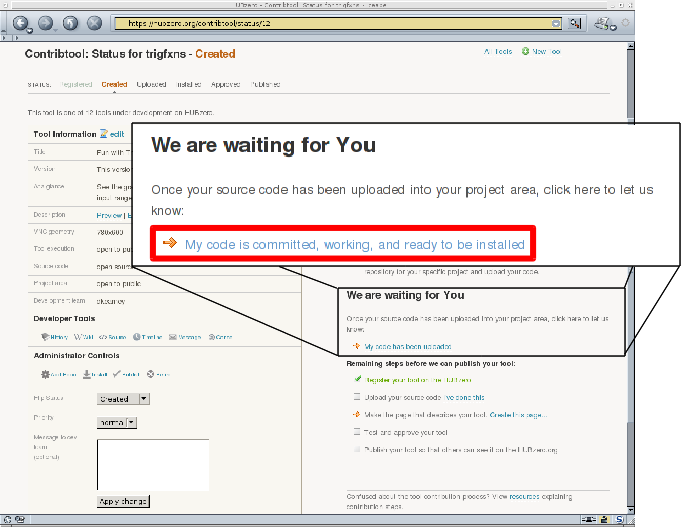
Back on the tool's status page at /tools/pipeline, use the Timeline link
under Developer Tools to confirm the commit arrived — the project area may
require a login. Then, under We are waiting for You, click "My code is
committed, working, and ready to be installed". The status becomes
Uploaded.
Uploaded to Installed
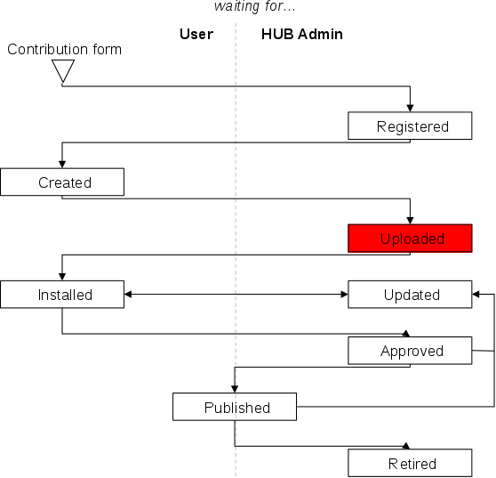
This is an admin task. On the tool's status page, press Install in
Administrator Controls. The CMS builds a command line and runs it as the
apps user:
- For an external Git repository it first mirrors the code with
git2git.sh(orgit2svn.shon hubs that only have that). - Then it runs
installtool.sh— falling back to the olderinstalltool— passing the repository host, the project alias, and the hub directory.
Both scripts are part of the tool platform, so what they do on disk could not be verified here. The CMS shows their output: green for success, red with the errors for failure.
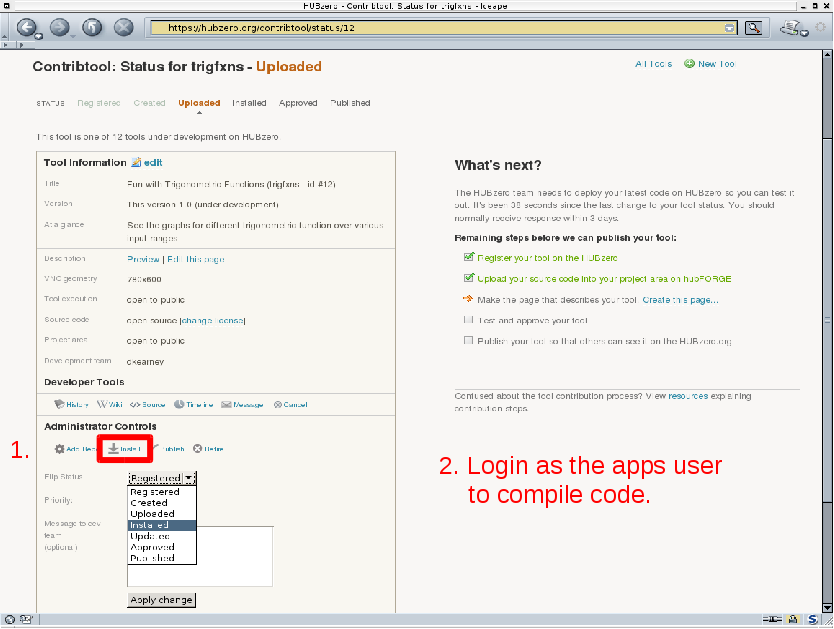
The next step is on the execution host. Open a workspace and, in an xterm:
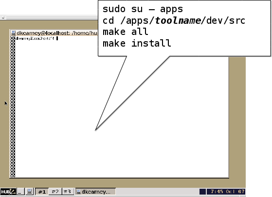
sudo su - apps
cd /apps/toolname/dev/src
make all
make install
If sudo su - apps fails, the account is not in the apps group — see
Preparation.
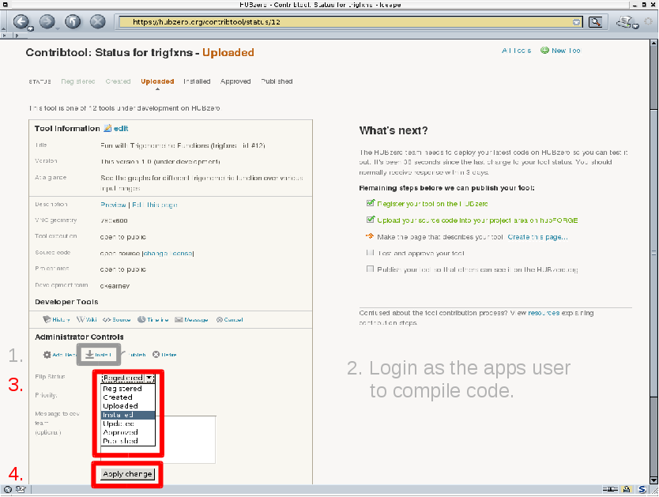
Back on the status page, set Flip Status to Installed and press Apply change. The What's next? panel then offers a Launch tool button. Use it and confirm the tool runs.
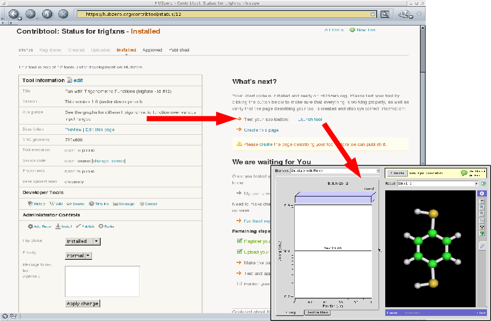
Installed to Updated
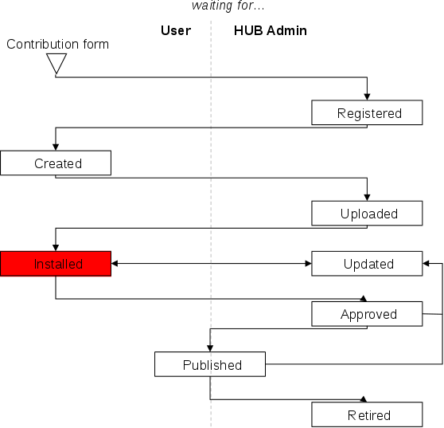
Testing the tool is the developer's job. When they find something to fix, they commit the change and use the What's next? link "I've committed new code. Please install the latest version for testing and approval." That sets the status to Updated, which is the pipeline's way of telling the administrator to install again.
Installed to Approved
Approval is a user task. Before a tool can be approved it needs a tool information page — the resource page listing authors, credits, publications, and screenshots. The What's next? panel links to it, as Create this page or Edit this page depending on whether one exists.
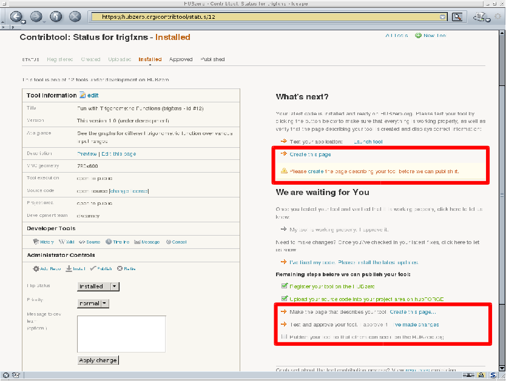
The wizard collects and formats the information and ends on a preview the developer confirms.
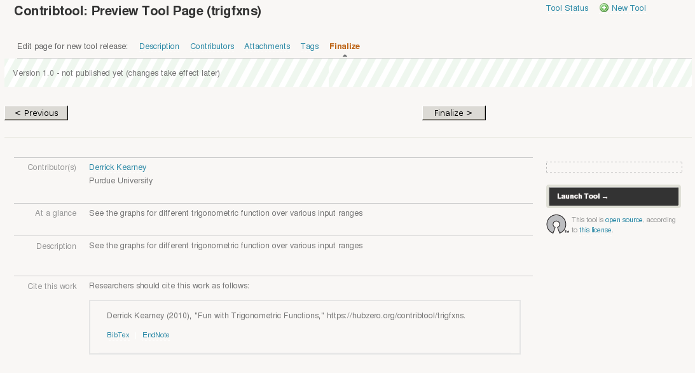
The developer also picks a license, replacing the template text with their own. Closed source requires a reason.
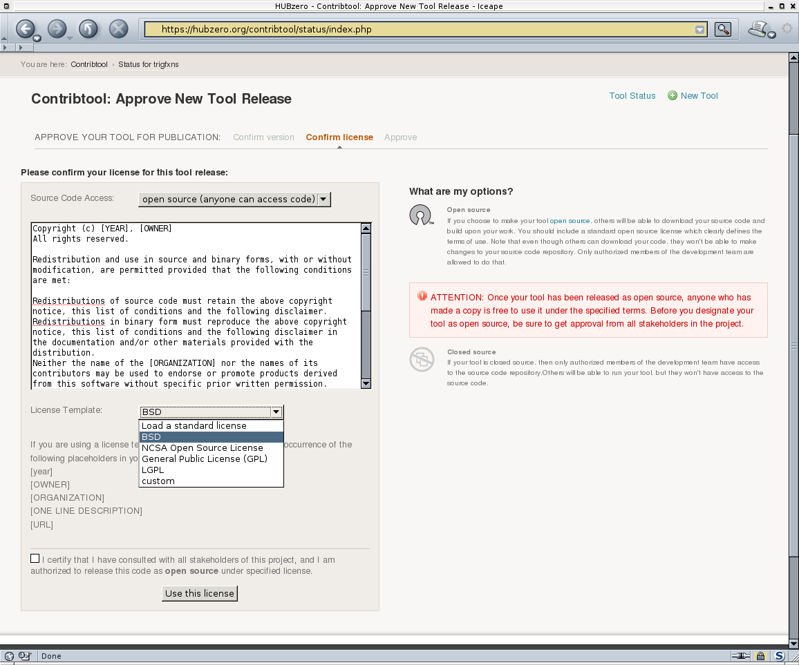
Finally, Approve this tool. The status changes to Approved.
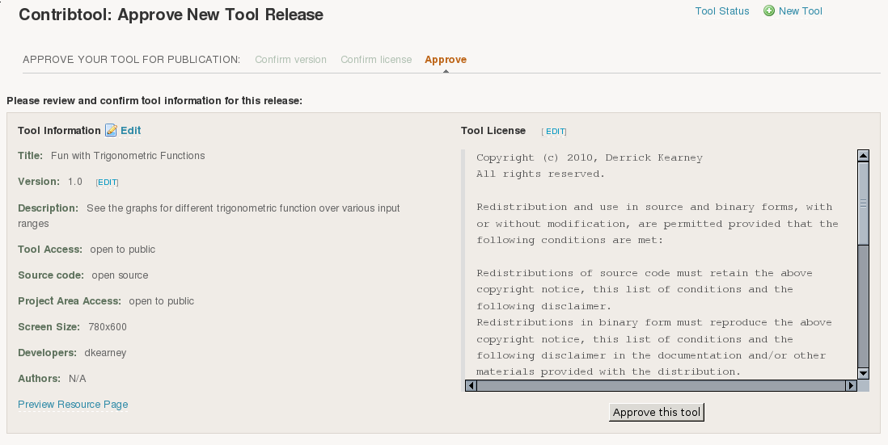
Approved to Published
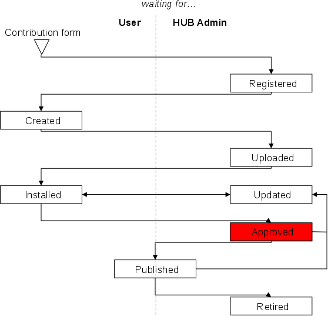
This is an admin task. Press Publish in Administrator Controls. The publish process exposes the tool information page on the hub and its output comes back the same way as Install — green for success, red for failure. Then set Flip Status to Published and press Apply change, which also sets the tool's published flag.
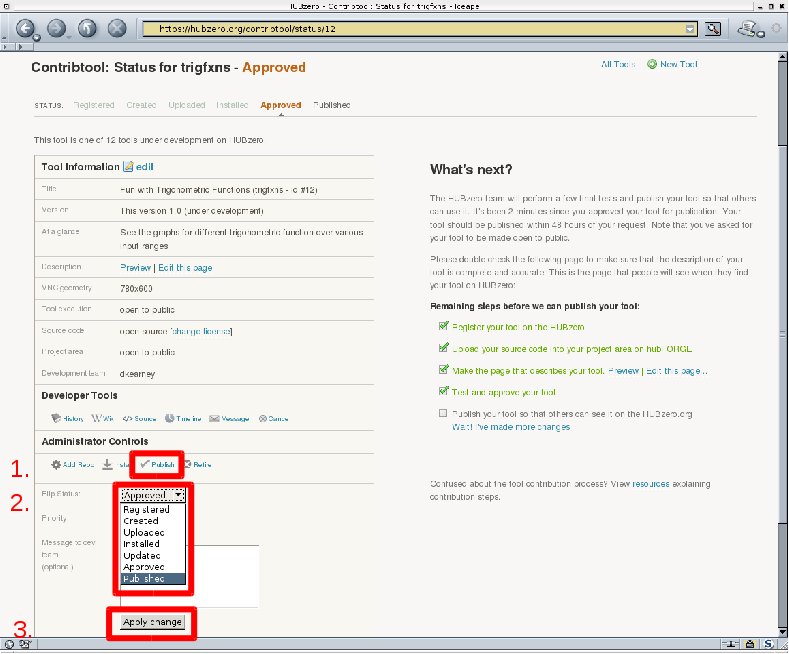
From the tool information page the tool can now be launched with Launch tool.
Published to Updated
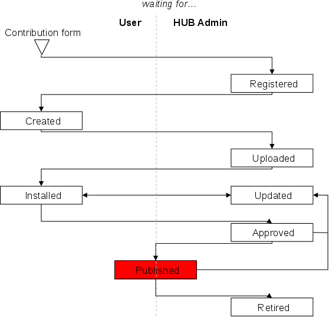
When the developer is ready to test a new release, they commit the changes and use the What's next? link to move the status from Published to Updated. This does not unpublish anything — the published version keeps serving users. It signals that the development version needs reinstalling, and the install–approve–publish cycle runs again.
Published to Retired
Published tools usually stay published. Retiring one leaves the tool information page in place as a record but stops anyone running it.
Retired is on the administrator's Flip Status drop-down only for tools whose published flag is set, and there is a Retire button in Administrator Controls alongside it. A retired tool's What's next? panel offers the developer a link asking for it to be republished, which moves it back to Updated.
Cancelling a contribution
A developer can abandon a tool that has not been published. The Cancel link under Developer Tools asks for confirmation, then unpublishes the draft resource page, sets the tool's state to Abandoned, drops its priority to lowest, and notes the cancellation on the tool's support ticket. Cancelling a published tool is refused, as is cancelling one already abandoned.
Rewritten and checked against 2.4-main @ 123ea53b14 on 2026-09-09.